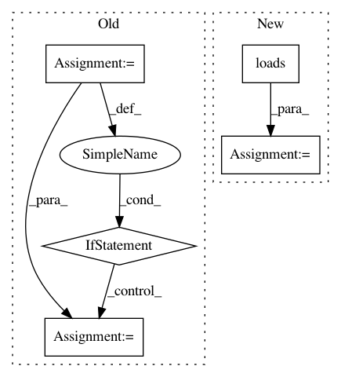

f776c0b8ead2d3bc04a9ddcb80a0f0c36fe030ca,syft/grid/clients/data_centric_fl_client.py,DataCentricFLClient,detail,#Any#Any#,293
Before Change
def detail(worker: AbstractWorker, worker_tuple: tuple) -> Union["VirtualWorker", int, str]:
detailed = BaseWorker.detail(worker, worker_tuple)
if isinstance(detailed, int):
result = VirtualWorker(id=detailed, hook=worker.hook)
else:
result = detailed
return result
After Change
is_client_worker = json.loads(is_client_worker)
log_msgs = json.loads(log_msgs)
verbose = json.loads(verbose)
encoding = json.loads(encoding)
timeout = json.loads(timeout)
hook = sy.local_worker.hook
me = sy.local_worker
// if worker with same id exist return that worker 2 worker with same id raises error
if id in me._known_workers.keys():
return me._known_workers[id]
client = DataCentricFLClient(
hook, address, id, is_client_worker, log_msgs, verbose, encoding, timeout
)
return client
In pattern: SUPERPATTERN
Frequency: 4
Non-data size: 5
Instances
Project Name: OpenMined/PySyft
Commit Name: f776c0b8ead2d3bc04a9ddcb80a0f0c36fe030ca
Time: 2020-10-12
Author: 2017csb1092@iitrpr.ac.in
File Name: syft/grid/clients/data_centric_fl_client.py
Class Name: DataCentricFLClient
Method Name: detail
Project Name: AKSHAYUBHAT/DeepVideoAnalytics
Commit Name: 90c7356471023c1bbeaabbcfff37eba11940bbe4
Time: 2018-08-13
Author: akshayubhat@gmail.com
File Name: server/init_fs.py
Class Name:
Method Name: init_models
Project Name: AKSHAYUBHAT/DeepVideoAnalytics
Commit Name: 90c7356471023c1bbeaabbcfff37eba11940bbe4
Time: 2018-08-13
Author: akshayubhat@gmail.com
File Name: server/init_fs.py
Class Name:
Method Name: init_process
Project Name: ray-project/ray
Commit Name: 0ba777af99e2d9dd8adf543f31860ea48f1acc05
Time: 2020-11-02
Author: swang@cs.berkeley.edu
File Name: python/ray/workers/default_worker.py
Class Name:
Method Name: